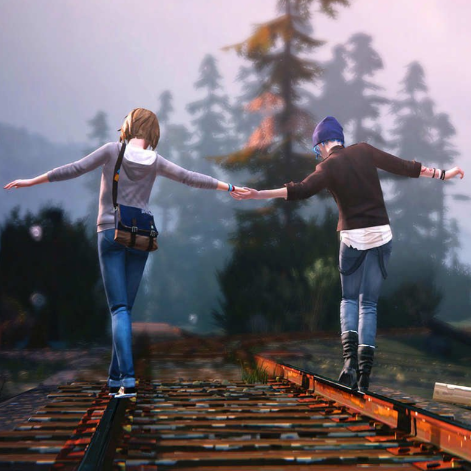

linki otwierają się w tej samej karcie
| Horizon: Zero Dawn | gatunek: RPG, przygodowa gra akcji |
Horizon Zero Dawn fabularna gra akcji przedstawiona z perspektywy trzeciej osoby, wyprodukowana przez studio Guerrilla Games. Gra została wydana przez Sony Interactive Entertainment 28 lutego 2017 wyłącznie na konsolę PlayStation 4.Główną bohaterką gry jest Aloy, wojowniczka plemienia Nora, która żyje w postapokaliptycznym świecie, przejętym przez mechaniczne zwierzęta. Protagonistka wyrusza na misję w celu poznania tajemnicy pochodzenia maszyn i swojego przeznaczenia.
Horizon Zero Dawn to fabularna gra akcji przedstawiona z perspektywy trzeciej osoby, umieszczona w otwartym świecie. Gracz wciela się w Aloy, która przemierza świat należący do mechanicznych zwierząt, zwanych „Maszynami”. W trakcie gry Aloy opanowuje umiejętność dominacji maszyn, zmieniając je w sojuszników, a niektóre także w środek transportu. Fokus, urządzenie znalezione przez Aloy w dzieciństwie, pozwala jej skanować teren, ukazując przeciwników, ich trasy i słabości.